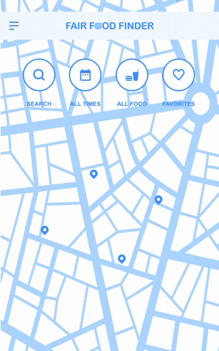

When the Minnesota State Fair was cancelled in 2020, I designed and built the Fair Food Finder web app to help people discover and locate fair food vendors operating locally. The app reached over 11,000 unique users in the first week and logged more than 150,000 food stand views.
In 2020, the Minnesota State Fair was cancelled due to the pandemic, but demand for iconic fair foods remained strong. Vendors operated pop-ups and events across the state, but there was no central resource to find them.
Photo of hungry fair goers
User need: Find their favorite fair foods despite the cancellation of the official event.
Business goal: Help vendors promote their local events and reach customers.
Success looked like: A web app that connected people with fair food locations, with high engagement and usage.
Research & Discovery
To validate the idea and shape the product direction, I conducted a user research survey through Google Forms alongside a lightweight prototype built in Adobe XD.
Google Forms survey and Food Finder prototype
Survey results showed strong interest in State Fair food, but users didn’t know where to find it or when events were happening. Key user needs included:
Discovering pop-up events in their area
Filtering by date, food type, or vendor
A mobile-friendly browsing experience with simple search
I also analyzed existing platforms like the MN Food Truck Association, Roaming Hunger, Food Trucks In, and Thrillist. While some listed vendors, they lacked real-time updates, event-specific filtering, and State Fair food coverage. Many also had outdated information or complex vendor sign-up processes.
This research confirmed a clear opportunity: create a mobile-first, real-time platform tailored to State Fair food lovers and vendors, with flexible filters and a simple vendor dashboard.
Ideation & Exploration
I researched scalable solutions with minimal maintenance needs. Early brainstorming and whiteboarding and wireframes in Adobe XD helped define the core features:
A simple map interface to browse food stands
Search to find favorite foods and vendors
Filters for availability, hours, and dates
A vendor dashboard for submitting and editing listings

Fair Food Finder wireframes
Design principles:
Fun and on-brand for the State Fair
Prioritize mobile usability
Launch fast and make iterative improvements
Design & Iteration
The visual design was inspired by classic fair themes, with bright colors and playful typography. Visual design work included:
Designed a custom logo and UI components
Developed mobile-first, responsive layouts
Screenshot of Fair Food Finder web app
The app was built using React, enabling fast rendering and interactive features. The user experience included:
Interactive map to explore nearby vendors
A real-time, searchable list of food vendors
Filtering by date & hours
Individual food stand pages with details, directions, and vendor links
Before the vendor dashboard was fully developed, I used a Google Form to collect vendor data and populate listings manually. This allowed a fast launch and validated vendor interest.
Screenshot of Fair Food Finder vendor dashboard web app
Strong Vendor interest, combined with large amounts of manual work inputting events, lead me to quickly build the Vendor Dashboard in React, and allowed vendors to:
Create and edit food stand listings
Add multiple event appearances
Update information dynamically, without needing support
Outcomes & Impact
The app launched to high praise from both users and vendors alike. Usage and key stats from the first week:
23,000 total app views
14,000 new users
113,000 food stands viewed
5,000 vendor searches
4,300 location detections
1,300 vendor websites viewed
1,100 directions requested
330 vendor Facebook views
170 menus viewed
25 vendor phone calls initiated
14,000 referrals from Facebook
0 support requests, indicating a smooth user experience
All of this was achieved with zero marketing budget, relying entirely on organic Facebook reach and word-of-mouth. Vendors reported increased traffic and awareness.
The app became a go-to hub for State Fair food fans and demonstrated how user-centered design and fast iteration can drive meaningful impact—even on a small scale.
Reflection
This project was a crash course in full-cycle product design:
Took the project from concept to launch as a solo designer-developer
Balanced user needs with vendor flexibility and lean tech
Learned how to drive growth with no budget through community engagement